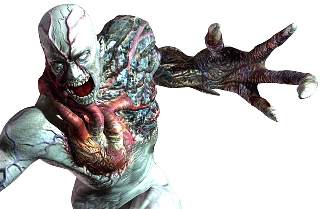

image pendingTyrant (T-002)
Spencer Mansion Incident
Threat
Extreme
Umbrella's first mass-produced bio-weapon prototype, engineered for raw durability over subtlety. It's less an ambush predator than a wall that keeps coming after you've already won.